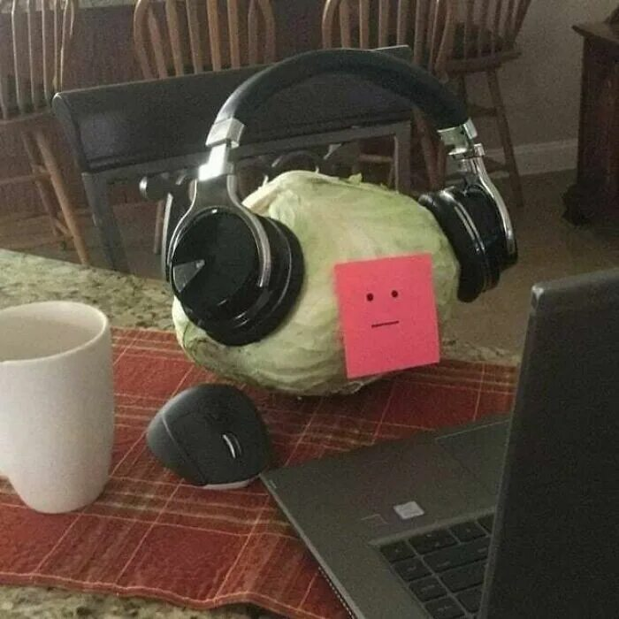

Фритрек и нулевой спринт: Подготовка к работе

<Чтобы начать,
самое лучшее время
-сегодня>
Это было самое начало пути. На этом этапе важно было проникнуться основами и настроиться на учёбу. И, возможно, подумать, как новые знания могут повлиять на ваше будущее.
На удивление, легко вошла в спринт и в работу.
"Безумие и
отвага"- было моим девизом на этом этапе.